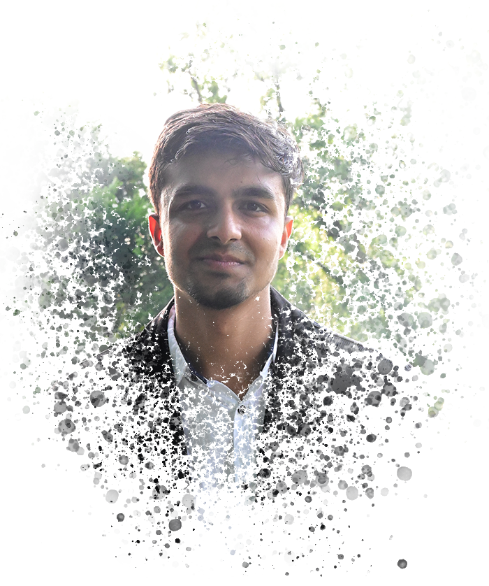
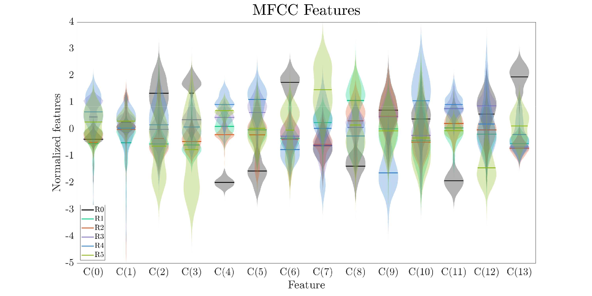
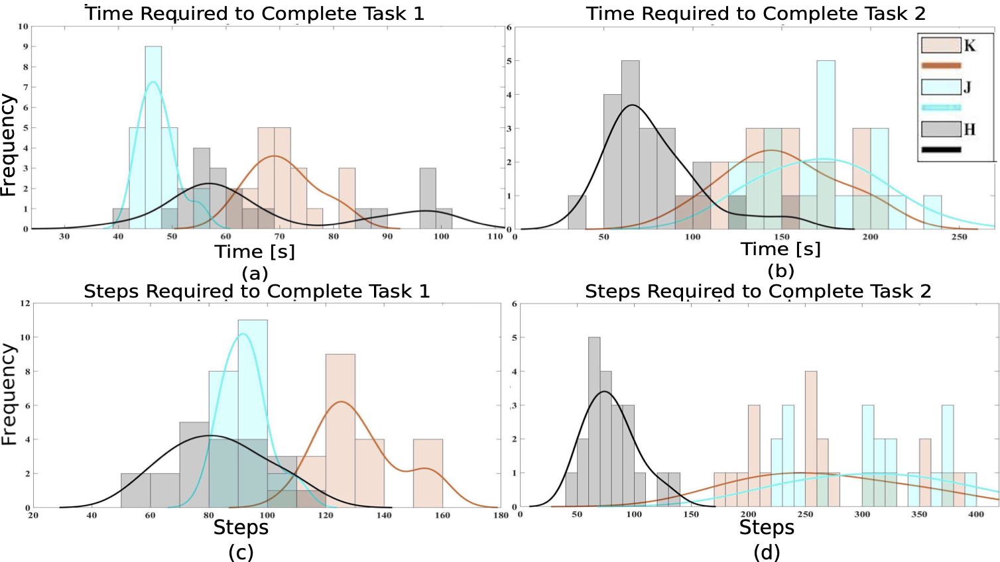
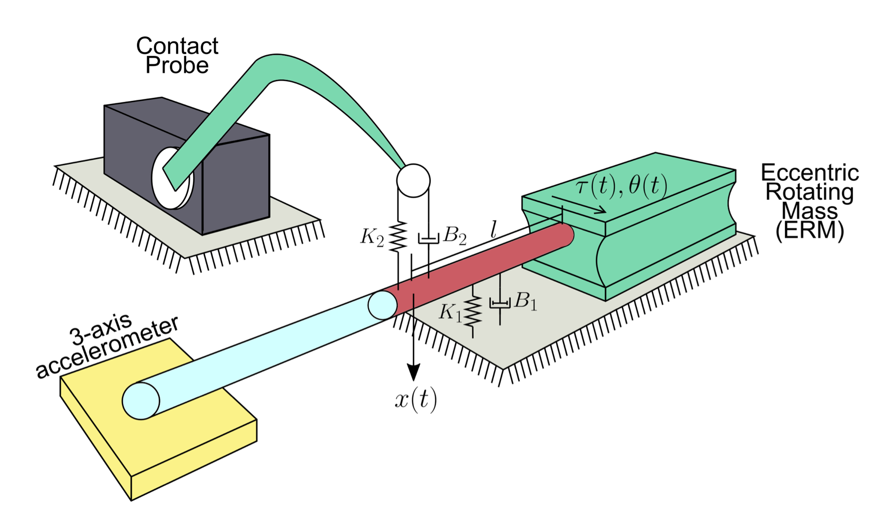
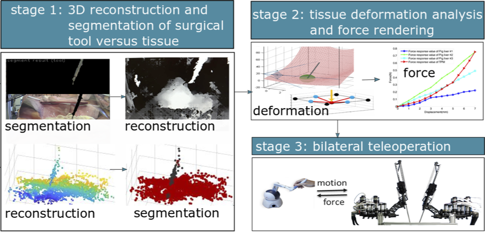
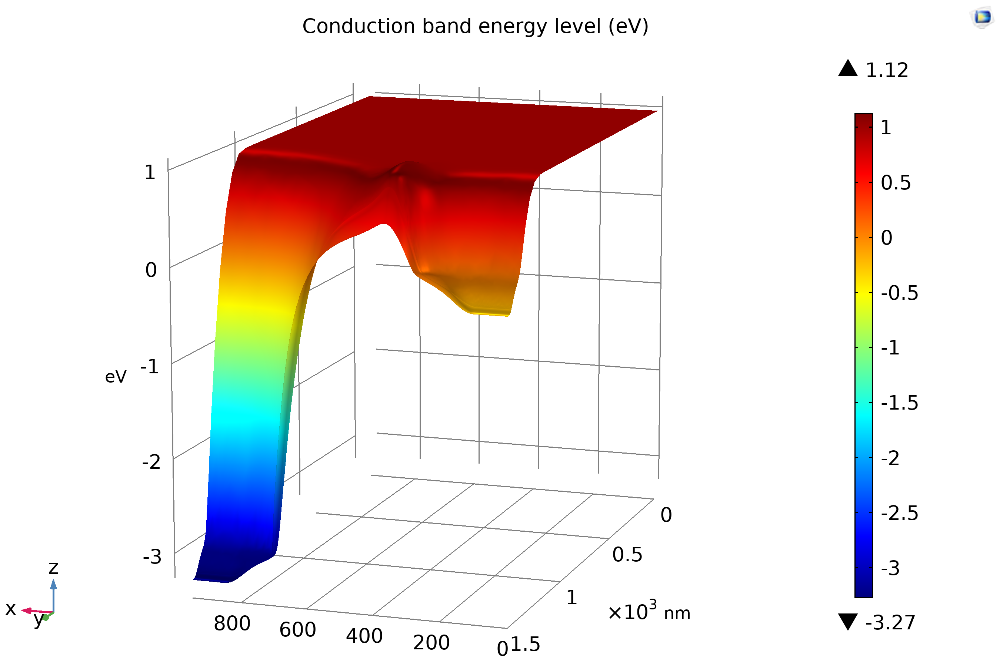

|
Divas Subedi
I am a recent graduate from Trinity College with B.Sc. in Computer Engineering and Physics. I currently work at Fermilab as Software Developer. I'm interested in the intersections between Computer Science & Physics, and hope to pursue a Ph.D. with a focus on Quantum Information. I'm a curious researcher, language enthusiast {both human & computer} and aspiring innovator. In my spare time, I enjoy hiking, rock climbing, puzzles and playing piano.
Email /
CV /
Google Scholar /
LinkedIn /
Github
|

|
|
Research
My Research in udergraduate involves project on semiconductor Devices, sensor implementation and signal processing.
|
|

|
Contact Localization via Active Oscillatory Actuation
Divas Subedi, Elizabeth Schoemer, Digesh Chitrakar, Yun-Hsuan Su, and Kevin Huang
14th IEEE/SICE International Symposium on System Integration (SII), 2020
paper
/
presentation
This work is extension of previous iteration of paper contact sensing. In addition to expansion of feature space in baseline approach, MFCC are used to create better features. With more contact locations and features, the proposed method is promising, as it presents more complexity and discrimination at higher granularity of localization with higher accuracy.
|
|

|
Telelocomotion-Remotely Operated Legged Robots
Kevin Huang, Divas Subedi, Rahul Mitra, Isabella Yung, Kirkland Boyd, Edwin Aldrich, Digesh Chitrakar
MDPI Applied Sciences, 2021
paper
This work introduces the idea of extending teleoperation
to enable online human remote control of legged robots, or telelocomotion, to traverse challenging
terrain. A haptic telelocomotion interface was developed. Two within-user studies validate the proof-of-concept interface and our results are promising to the use of haptic feedback for telelocomotion in complex traversal tasks. This work builds on our 2020 IRC poster paper.
|
|

|
Contact Sensing via Active Oscillatory Actuation
Rahul Mitra, Kirkland Boyd, Divas Subedi, Digesh Chitrakar, Edwin Aldrich, Ananya Swamy, Kevin Huang
3rd International Conference on Mechatronics, Robotics and Automation (ICMRA), 2020
paper
In this work, a contact sensor that is minimally intrusive and can be subsumed into extant devices is prototyped and tested. Oscillatory acceleration data is collected and subsequently used to train and classify different contact locations using frequency-based features. Three separate classes are distinguished according to contact location. Results are promising and show excellent classification of both contact and contact location.
|
|

|
Characterizing limits of vision-based force feedback in simulated surgical tool-tissue interaction
Kevin Huang, Digesh Chitrakar, Rahul Mitra, Divas Subedi, Yun-Hsuan Su
42nd Annual International Conference of the IEEE Engineering in Medicine & Biology Society (EMBC), 2020
paper
This work attempts to empirically evaluate the degree to which haptic feedback may deviate from ground truth yet result in acceptable teleoperated performance in a simulated RMIS-based palpation task. A preliminary user-study is conducted to verify the utility of the simulation platform, and the results of this work have implications in haptic feedback for RMIS and inform guidelines for vision-based tool-tissue force estimation.
|
|

|
MOSFET Channel Engineering and Scaling Study using COMSOL Multiphysics® Simulation Software
Divas Subedi and Deborah A. Fixel
COMSOL Conference, 2019
paper
/
poster
/
presentation
The effect of constant-field scaling on a FIBMOS (focused-ion-beam metal-oxide-semiconductor) device compared to the conventional MOSFET (metal-oxide-semiconductor field-effect transistor) is studied in this paper. A narrow P+ region with a higher doping concentration than the substrate is implanted next to the source region to implement FIBMOS. The simulation is conducted on a conventional MOSFET as well as a FIBMOS transistor for 122.5-nm, 175-nm, 245-nm, and 350-nm channel-length devices. The simulations show that the FIBMOS device demonstrates greater threshold voltage stability upon channel length variation, improved output resistance, greater resistance to the punch-through effect, and reduced hot electron degradation.
|
|
Services
- Teaching Assistant:
- Engineering and Analysis (Spring '20, Fall '20)
- Introduction to Engineering Design: Mobile Robots (Spring '20)
- Linear Circuit Theory (Spring'21)
- Electricity, Magnetism and Waves (Spring '21, Spring '22)
- Mechanics (Fall '21)
- Mathematical Foundation of Computing (Fall '21)
- Organizations:
- Trinity College Chapters of IEEE.
- Trinity College Chapter of SPS.
- Trinity College Habitat for Humanity.
- IEEE TryEngineering.
|
|